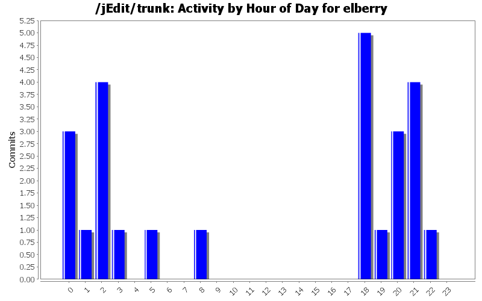
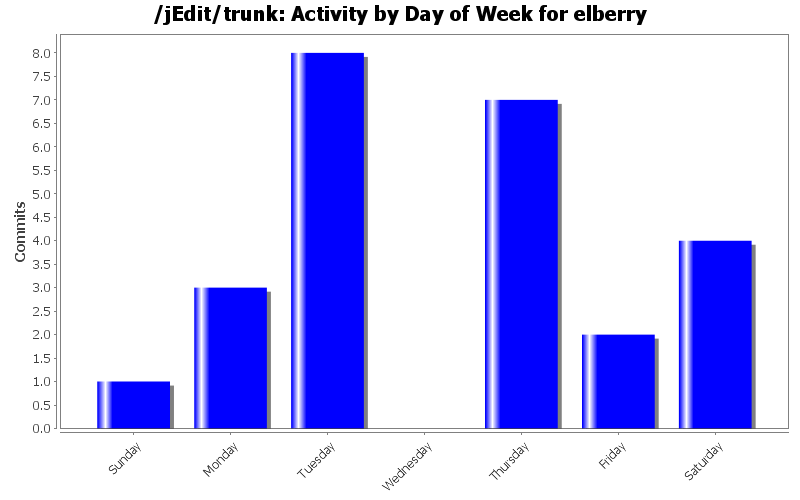
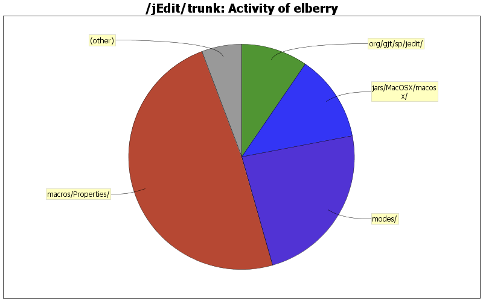

| Directory | Changes | Lines of Code | Lines per Change |
|---|---|---|---|
| Totals | 25 (100.0%) | 419 (100.0%) | 16.7 |
| macros/Properties/ | 2 (8.0%) | 204 (48.7%) | 102.0 |
| modes/ | 8 (32.0%) | 99 (23.6%) | 12.3 |
| jars/MacOSX/macosx/ | 1 (4.0%) | 52 (12.4%) | 52.0 |
| org/gjt/sp/jedit/ | 1 (4.0%) | 40 (9.5%) | 40.0 |
| org/gjt/sp/jedit/gui/ | 3 (12.0%) | 13 (3.1%) | 4.3 |
| doc/ | 3 (12.0%) | 3 (0.7%) | 1.0 |
| / | 3 (12.0%) | 3 (0.7%) | 1.0 |
| org/gjt/sp/jedit/syntax/ | 1 (4.0%) | 2 (0.5%) | 2.0 |
| org/gjt/sp/util/ | 1 (4.0%) | 1 (0.2%) | 1.0 |
| org/gjt/sp/jedit/io/ | 1 (4.0%) | 1 (0.2%) | 1.0 |
| doc/users-guide/ | 1 (4.0%) | 1 (0.2%) | 1.0 |

Update the base version of CHANGES.txt to 5.2.0
0 lines of code changed in 1 file:
Fixing findbugs dependency. 2.0.0 wasn't in maven central, 3.0.0 was.
1 lines of code changed in 1 file:
Adding a test skip property so the daily can build when there are failed tests
1 lines of code changed in 1 file:
Fixing here doc spans - removing my bad paragraph support.
3 lines of code changed in 1 file:
Adding PARAGRAPH support, puts and print to keywords list, and fixing parse error due to AT_LINE_START being in the BEGIN tag of the SPAN type.
8 lines of code changed in 1 file:
Applying patch from ticket #3604532
5 lines of code changed in 1 file:
Adding changes for 3034220 to change log.
3 lines of code changed in 1 file:
Applying patch: https://sourceforge.net/tracker/?func=detail&aid=3161330&group_id=588&atid=300588, fixes: https://sourceforge.net/tracker/?func=detail&aid=3034220&group_id=588&atid=100588. Also seems to fix the extra view that used to show up when I dragged a text file to the jEdit icon.
93 lines of code changed in 3 files:
fixing copy-paste catalog entry.
3 lines of code changed in 1 file:
Adding gradle specific mode file.
54 lines of code changed in 2 files:
Adding mode for outlines.
28 lines of code changed in 2 files:
Changing plugin announcement to use plugin dependency names instead of the class name. This will help with releases as plugins in PluginManager are shown using their names, not their classnames.
121 lines of code changed in 1 file:
Updating references to 1.5.0 javadoc.
10 lines of code changed in 4 files:
Adding separate documentation file containing instructions on how to build the jEdit documentation. Should make it easier to find.
0 lines of code changed in 1 file:
Fixing copy-paste error in StandardUtilities.
1 lines of code changed in 1 file:
creating mode for gsp, which just uses the jsp.xml mode.
3 lines of code changed in 1 file:
Fixing Java 6 dependent code.
2 lines of code changed in 1 file:
Adding version check to "Create Plugin Announcement" macro. This will show a warning to users creating a plugin release announcment when their plugin's requirements for jEdit, and other plugins don't match what they have installed. Eg. If the user is creating a plugin ann. for a plugin requiring jEdit 04.03.18.00, and they are running jEdit 04.03.99.01, the warning will show. Likewise, if the user creates an ann. for a plugin that requires ProjectViewer 2.9.0, but they are using 2.9.3 the warning will show. User's can always click "Yes", or hit enter on the dialog window to create the ann. anyway.
83 lines of code changed in 1 file: